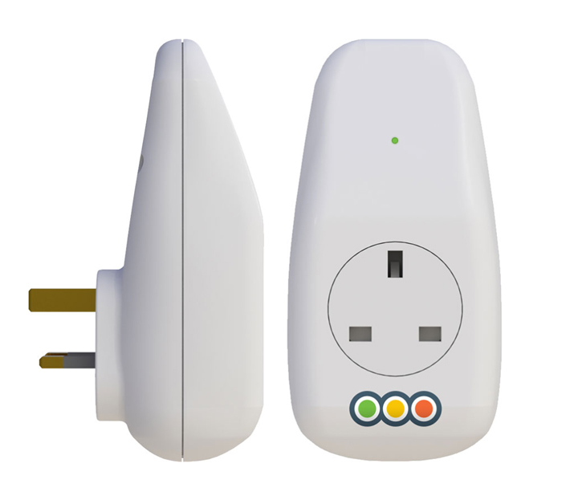

Filters
3Rings

3Rings is a plug that lets loved ones know when it is used. It allows family and friends to know that the user is fine. Flexible schedules can be set. For example, a user may have a habit of drinking tea in the morning, thus using the kettle at certain hours. Loved ones will be notified if the plug is not used during that time period, who can then check on the user. It is a way to check on aging people without being overbearing.
Get it at 3Rings.com